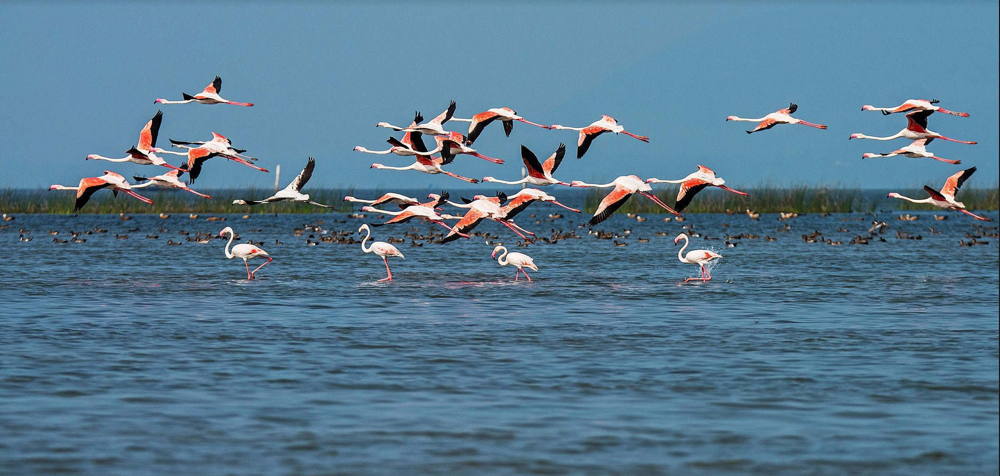
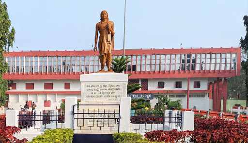

Ganjam district is a district in the Indian state of Odisha. Ganjam's total area is 8,070 km² (3,116 mi²).
The district headquarters is Chhatrapur. Ganjam is divided into three sub-divisions Chhatrapur, Berhampur, and Bhanjanagar. The Imperial Gazetteer of India 1908 lists Ganjam, along with the Thanjavur and South Canara districts, as the three districts of the Madras Presidency where Brahmins were most numerous. As of 2011 it is the most populous district of Odisha (out of 30)
Ganjam was a part of ancient Dakshina Kalinga. The Mauryan emperor Ashoka inscribed his message at Jaugada near the banks of the Rushikulya, in the present-day Ganjam district. Scholars thus conclude that a significant part of Ganjam was under the rule of Ashoka. There are multiple theories regarding the name 'Ganjam'. During the 7th century, the region was known as Kangoda or Kongoda. Some scholars believe the word evolved from this ancient name. A second theory suggests that one Ibrahim Qutabshahi, Sultan of Golconda invaded the region in 1571 and the region later became known by the Persian adjective 'Ganj-i-am', meaning 'place of the commoners.

Ganjam District is on 19.4 to 20.17 degree North Latitude and 84.7 to 85.12 degree East Longitude. It covers an area of 8070.60 sq km. The district is braodly divided into two divisions, the Coastal plain area in the east and hill and table lands in the west. The eastern ghats run along the western side of the District. The climate of Ganjam is characterized by an equable temperature round the year, particularly in the coastal regions. The District‘s cold season from December to February is followed by hot season from March to May. The District experiences normal annual rainfall of 1444 mms.
Agriculture is a traditional occupation and the way of living of the inhabitants of the Ganjam District. The District is well known for its fertile soil and agricultural productivity. A large variety of crops are grown here like Paddy, Ground nut, Sugar cane, Oil seeds, Ragi, Mung, Biri etc. Because of the agro climatic condition Ganjam is included as the agricultural District.

The literacy rate of the ganjam district is above 60 percent. There are many reputed educational institutes in the District like Brahmapur University, Ganjam Law college, Lingaraj Law college, NIST, Khalikote College Brahmapur, R.C.M. Science college Khalikote, Government Science College Chhatrapur, Maharaja Krushna Chandra Gajapati Medical College, Nursing College, and Pharmaceutical Colleges etc.
Ganjam District celebrates many festivals round the year. Dola Yatra, Tara Tarini Mela, Thakurani Yatra, Durga Puja, Shiv Ratri, Ratha Yatra, Makar Sankranti, Manabasa Gurubara and Danda Yatra are the famous festivals being celebrated in the District with great enthusiasm. Ganjam District is full of many tourist spots that are visited by a large number of tourists every year like Arjyapalli, Athagadapatna, Balkumari, Brahmapur, Bhairabi (Mantridi), Bhetanai, Biranchi Narayan, Budhakhol- Buguda, Chilika (Rambha), Girisola, Gopalpur sea beach, Taratarini etc
Ganjam District is the land of many prominent personalities like: Bharat Ratna Varahgiri Venkat Giri, Biswanath Dash, Binayak Acharya, Kabi Samrat Upendra Bhanja, Sasi Bhusan Rath, Kabi Surjya Baladeba Rath, Kalinga Bira Biju Pattnaik, Raja Bahadur Ramachandra Mardaraj Deo, Chakara Bisoyi, Padmasri Bhagaban Sahu.